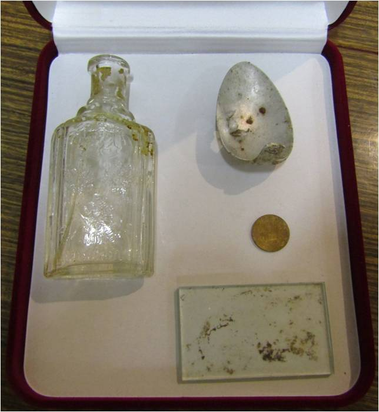

Казаков Евграф Иванович
31 мая 2018 года состоялась торжественная церемония захоронения останков солдата
Великой Отечественной Войны Казакова Евграфа Ивановича, 1901 г.р., уроженца
Кичменгско-Городецкого района, погибшего в 1942 г., и поднятого в ходе работы
поисковой экспедиции в рамках Всероссийской акции «Вахта памяти» в г. Ржев Тверской области.
По итогам экспедиции усилиями поисковиков подняты и подготовлены к погребению останки
173 бойцов и командиров Красной Армии, поднято 20 медальонов, именные личные вещи.
Экспертами полевой лаборатории экспедиции установлены судьбы 8 солдат.
В одном из медальонов удалось расшифровать текст: - Казаков Евграф Иванович,
1901 г.р., Вологодская область, Городецкий район. Жена: Казакова Наталья Александровна
и ее адрес. После выяснения сведений о месте жительства и его родственниках удалось установить,
что Евграф Иванович Казаков родом из деревни Княжигора Городецкого сельсовета, где проживают
его родственники. Казаков Евграф Иванович отдал свою жизнь, защищая Родину, он погиб за то,
чтобы мы могли сегодня свободно жить на нашей земле и растить детей.
Нательный медальон
Личные вещи Казакова Евграфа Ивановича